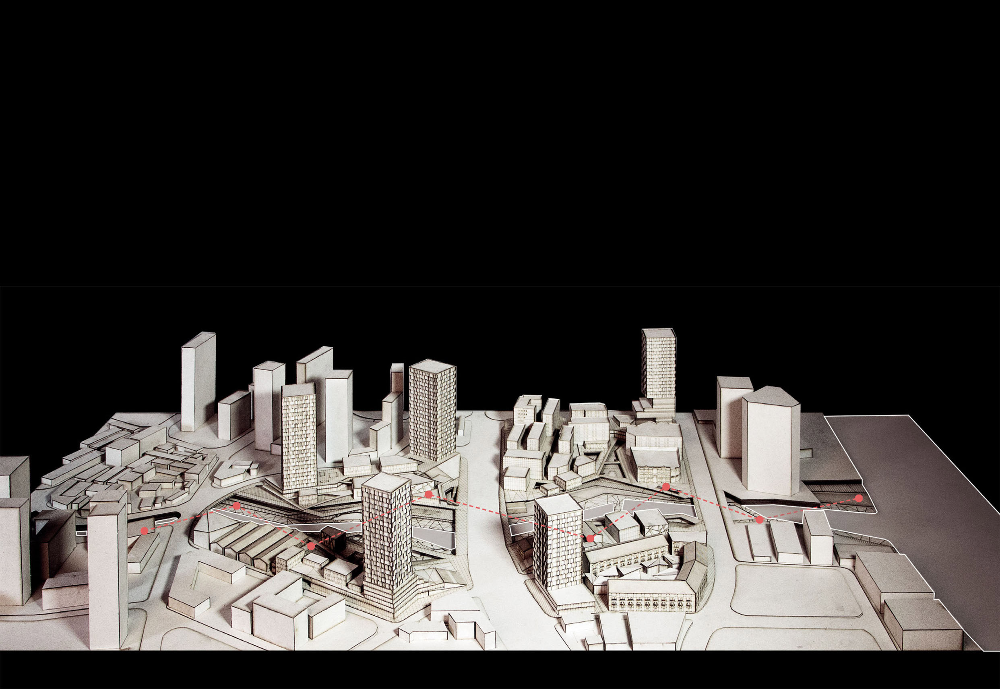

Urban Design & Responsive River Interface
Urban Design
Designer
Xinwen LIU, Murong MI
This project focuses on the renewal of waterfront typologies in the North bund, Shanghai. The river is inaccessible and hinders the development of this area. Here, multiple layers are implemented to solve various problems. These layers focus on the river, which works as landscape, infrastructure or facilities.
Inaccessibility to River
Our main strategy is to make multiple layers of the river and synthesize them together.
By overlapping the layers, the system is flexible, always evolving to accommodate local contingencies while maintaining overall continuity. The overlapped river works as artificial ecology, which enhances the urban space in a discrete while synthetic approach.